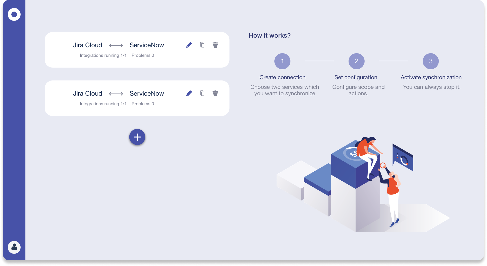
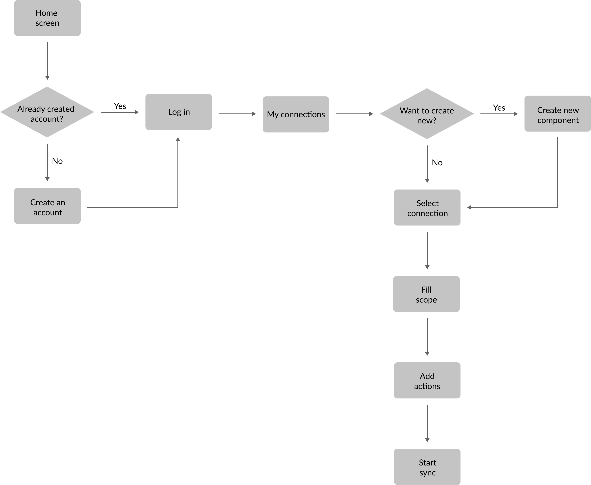
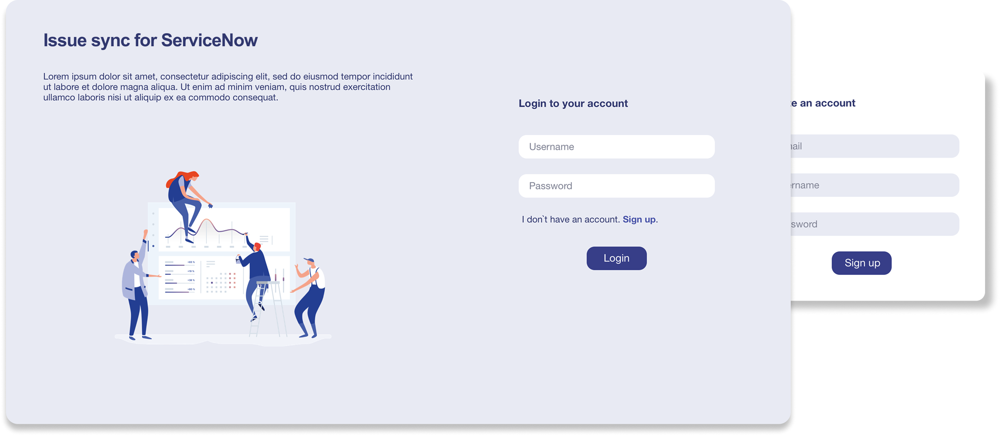
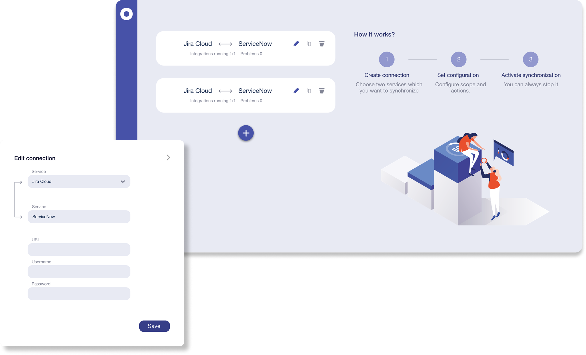
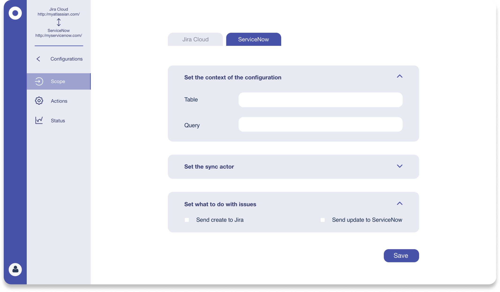
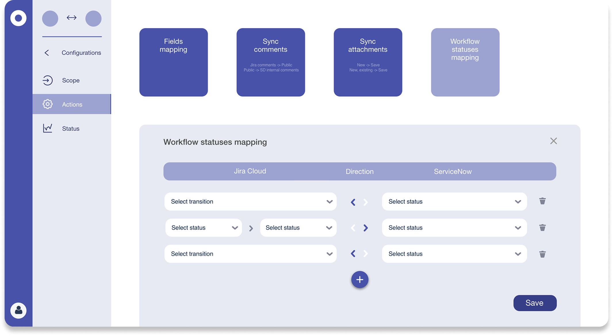
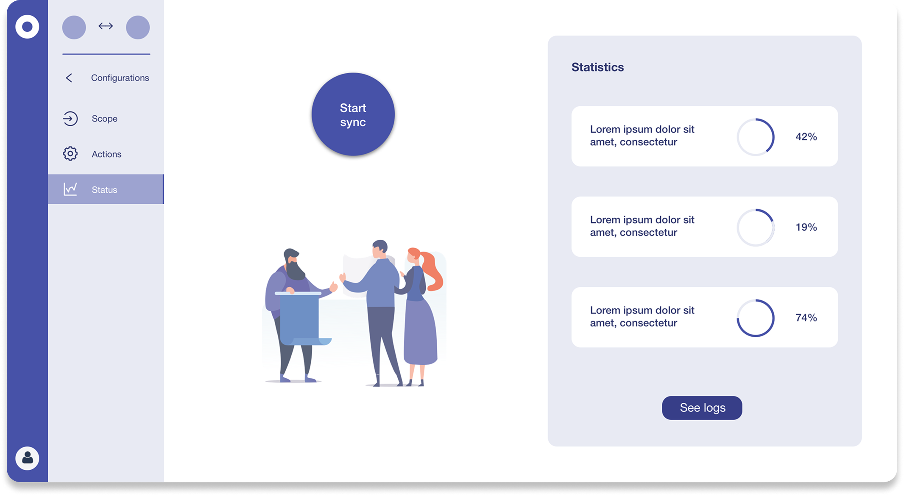

A cross-platform integration that enables seamless two-way synchronisation of issues between Jira Cloud and ServiceNow - eliminating duplicate work and keeping both teams aligned in real time.

Enterprises running both Jira Cloud and ServiceNow faced a painful daily reality: the same issue had to live in two places at once. Support teams logged tickets in ServiceNow, while development teams tracked work in Jira. Without a sync layer, updates made in one platform never reached the other - leading to duplicated effort, missed status changes, and constant manual reconciliation across teams.
The absence of a reliable integration forced teams to rely on workarounds: spreadsheets, copy-pasted updates, and fragile Zapier automations that broke under edge cases. The cost wasn't just time - it was trust between teams. When engineers and support agents operated from different versions of the same ticket, handoffs fell apart and customers waited longer for resolution.
I interviewed users on both sides of the integration - Jira administrators responsible for configuring the connector, and ServiceNow agents who would interact with synced tickets daily. I also ran a competitive analysis of existing Marketplace integrations to identify where similar tools fell short.
Three consistent themes emerged from the research:
1. Admins needed granular control over which fields sync and in which direction - a blanket two-way sync created conflicts and data loss in both systems.
2. End users on both platforms needed clear visual signals when a ticket was synced - they needed to know at a glance whether an update had already been shared with the other team.
3. Failure states were invisible in existing tools - when a sync failed silently, nobody knew until a meeting surfaced a discrepancy days later.
The research pointed to two types of problems: structural issues in how teams had to work, and confidence issues in the tools they were using.
If teams could define exactly which fields and statuses sync between platforms, they would no longer need to maintain parallel ticket workflows - freeing up time and reducing human error.
Every team had slightly different Jira and ServiceNow configurations. The integration had to handle custom fields, mismatched statuses, and conflicting updates without requiring users to understand the underlying logic.
Jira admins thought in terms of projects and issue types. ServiceNow admins thought in tables and records. The configuration UI had to speak both languages without compromising either.
Users didn't need real-time updates as much as they needed confidence that the sync had happened. A clear sync status indicator reduced support queries more than any speed improvement.
Three roles interacted with the integration in very different ways. The design had to serve all of them - without requiring any of them to understand how the other side of the system worked.
The business logic behind the sync was complex - issues could be created from either side, synced automatically or manually, and could hit multiple error states. I mapped the full decision tree to identify every path a ticket could take through the system before designing any UI screens.
This flow map became the foundation for both the admin configuration experience and the end-user status indicators. It helped the team align on edge cases early - before any of them became bugs in production.

The final design separated the experience into two distinct surfaces: an admin configuration panel for setting up the integration, and a sync status view embedded directly into Jira and ServiceNow issue pages.
The configuration panel walked admins through connection setup, field mapping, and sync direction - using a step-by-step flow that kept complexity manageable. The issue-level sync panel gave end users instant visibility into sync status, last updated time, and a direct link to the counterpart ticket in the other system.





The integration launched on the Atlassian Marketplace and quickly became one of the go-to solutions for enterprises running both platforms. The configurable field mapping removed the biggest barrier to adoption - teams no longer had to accept a one-size-fits-all sync that broke their existing setups.
The sync status panel embedded in Jira issues proved especially valuable - it reduced the most common support request ("is this ticket in ServiceNow?") to a glance. Teams reported fewer cross-platform miscommunications and faster handoffs between engineering and support within the first quarter after launch.